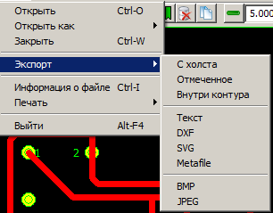

Меню настройки и выполнения экспорта документов PCAD в иные распространённые графические форматы выглядит следующим образом:

В программе предусмотрена функция преобразования (экспорта) загруженного PCAD-документа в некоторый набор стандартных графических файлов, имеющих широкое распространение за пределами мира схемотехнических САПР. Полный их перечень можно видеть в приведённой выше картинке соответствующего меню программы.
Все их можно разделить на две категории: векторные и растровые. Растровые изображения служат, как правило, только иллюстративным целям, а векторыне можно задействовать также и в других САПР и вычислительных программах, которые выполняют какие-либо сторонние счётные или проектировочные операции, уже не связанные прямо со схемотехникой. К растровым форматам, поддерживаемым данной программой, относятся файлы BMP и JPEG. Так как все растровые форматы, в некотором смысле, эквивалентны друг другу, то надеюсь, этих двух будет достаточно и дополнять список чем-либо ещё не придётся.
В отличие от растровых, векторные форматы уже трудно взаимозаменяемые, поэтому их список куда шире. Мало того, в будущем, возможно, их станет ещё больше. Но пока переченб поддерживаемых векторных форматов ограничен следующими: "текстовый формат", DXF, SVG И Windows Metafile. Причём поддержка DXF и Metafile пока только заявлена, но на самом деле не реализована (отсутствует). Хотя пункты меню для них уже зарезервированры, при попытке экспорта в эти два типа файлов вы получите лишь сообщение об отсутствии в настоящий момент реализации этой возможности.
Так как исходно все PCAD-изображения являются векторными, то для преобразования их в растровое представление производится их растеризация (отрисовка). При выводе в векторные форматы также приходится осуществлять некие весьма сложные преобразования. В основном это связано с тем, что целевые форматы не поддерживают весь список примитивов, из которых состоят изображения PCAD-типа, поэтому такие элементы приходится приблизительно представлять в виде набора таких примитивов, которые в данном векторном формате существуют. Поэтому экспортное векторное представление исходного рисунка может отличаться от оригинала, порой весьма сильно. Хотя предпринимаются все усилия, чтобы это отличие было минимальным.
Дадим небольшое пояснение касательно типов поддерживаемых векторных форматов.
Экспорт во внешние форматы не обязательно должен осуществляться сразу для всего изображения. Как и для некоторых других операций над рисунком, обеспечиваемых данным просмотрщиком, для операции экспорта доступны средства ограничения множества примитивов загруженного PCAD-документа, которые будут подвергнуты преобразованию и выведены в выходной файл. Для этого применяются три верхних пункта подменю экспорта - "Файл/Экспорт/С холста", "Файл/Экспорт/Отмеченное" и "Файл/Экспорт/Внутри контура".
Каждый из них представляет собой двоичный переключатель, который может находиться в одном из двух состояний - включён или выключен. Включённое положение приводит в действие соответствующий механизм ограничения совокупности элементов изображения, которые будут отправлены на экспорт.
Активация пункта "Файл/Экспорт/С холста" приведёт в тому, что операция будет выполняться только для тех примитивов, которые хотя бы частично находятся в площади холста. Для обеспечения работоспособности этой функции холст должен быть активирован (выведен) и настроен. Активный пункт "Файл/Экспорт/Отмеченное" ограничивает список экспортируемых элементов только теми, которые в данный момент являются отмеченными. Наконец, включение пункта "Файл/Экспорт/Внутри контура" приведёт к тому, что объектами обработки станут только те элементы, описанный прямоугольник которых имеет непустое пересечение с прямоугольником выделяющей рамки.
Пункты-переключатели могут быть активированы одновремено и работать совместно. В этом случае они объединяются по принципу логического "И" (пересечения множеств) и обработке подвергнутся только такие примитивы, которые одновременно удовлетворяют ограничениям, соответствующим всем включённым (активированным) режимам.